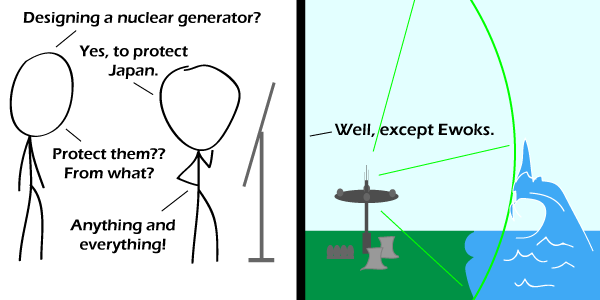

Comic JK 639
When I Feel Like It
⇤
<
?
>
⇥

⇤
<
?
>
⇥
Forum
.
RSS
.
Digg
.
Facebook
.
Reddit
.
Twitter
.
Stumbleupon
Enter your thoughts on number 639 here. Please, no spamming, trolling, phreaking, or going to Japan. It really would protect them, from lung cancer from fossil fueled power plants. > Sure... even in case of a nuclear fallout, _lung_ cancer is not the primary problem, I guess... > lung cancer, asthma, copd, emphysema, there are many advantages to nuclear >> Hey, how many fatalities were there as a result of Three Mile Island? (Hint: the >> answer is the same as the total number of nuclear fatalities in the US EVER) >> (72 brazillion) >> Now, how about coal? Ignoring for the moment the normal 30-50 miners, how about >> the deaths due to fine particle pollution? THIRTY THOUSAND. Almost as many as >> car crashes - the other massive fatality number nobody talks about. What do you >> want to bet there are MORONS rushing out to buy potassium iodide pills while >> NOT wearing their seat belts? >>> The number of nuclear fatalities in the US goes into the millions. Some types of cancer only occur after exposition to nuclear isotopes or gamma rays. But to be honest, this more applies to handling nuclear waste or residue from older luminous material, and computer tomographies. But to make it clear: Radiation kills slowly, so it very often isn't recognized it was the radiation. But the folks who made the plutonium for the first bombs nearly all died within 10 years. Most of them of cancer. >>>> Also, you are comparing the total number of mine workers killed with the yearly number of persons dying on the road. Please learn some statistics. >>>>> This is a generous way to make a valid point... the difference in units only emphasizes the strong true difference... [cont..] >>>> Also also, if it goes really really wrong at a nuclear plant, millions or tens of millions are affected, rendering millions of square miles uninhabitable. If it goes really really really wrong at a coal plant, a few thousands. >>>>> [..cont] The rest of what you say makes very good points. Support. Of course, destruction of surrounding area mining for coal is incredible. I am amazed there are still people rooting for coal over nuclear... What the fuck people! >I am shocked there are still people rooting for either. >>it's something about liking the trappings of modern life, such as clean water and sewage systems, heating, lighting, refrigeration, computing and the myriad other aspects that either directly or indirectly require ample, stable electical power... >>> None of those items require ample, stable electrical power, and we only desire them because we are used to them ... >>>>and a smartphone with a calendar app is a lot more portable than Stonehenge... My Hobby, spelling correction. > Congrats! You spelled it correctly. >>>Super late: How could anyone support Coal over nuclear is outstanding. The billions that will be killed over globing warming over the hundreds of thousands affected by nuclear outstand me. Also, those who think modern life could exist without power should go camping and hunt their own food. Oh, and build their own shelter too, no plastic tents since that requires oil and factories that use power. And walk then there. Because then and only then could you live life without power.